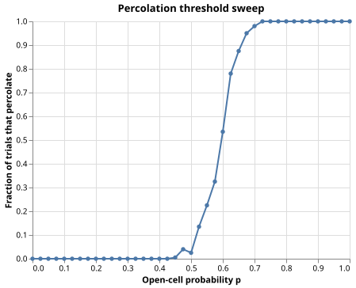

Percolation in a Porous Medium
The Problem
- Porous materials such as sandstone, soil, and filter membranes have a random network of connected pores.
- A fluid injected at one face can flow to the other face only if there is a continuous path of connected open pores.
- The critical question is: at what fraction of open pores does flow first become possible?
- This is the percolation threshold, a sharp transition that appears in hydrology, materials science, and network theory.
The Grid Model
- We approximate the material as a square grid: each cell is independently open (passable) with probability $p$ or blocked (solid) with probability $1-p$.
- This is site percolation on a 2D square lattice with 4-neighbor (von Neumann) connectivity.
- "Percolation" means a connected path of open cells exists from any cell in the top row to any cell in the bottom row.
GRID_SIZE = 20 # side length of the square grid (cells)
N_TRIALS = 200 # independent trials per probability value
N_PROBS = 41 # number of probability values from 0.0 to 1.0 inclusive
RNG_SEED = 7493418
# Theoretical site-percolation threshold for a 2D square lattice with
# 4-neighbor (von Neumann) connectivity. From Stauffer & Aharony,
# Introduction to Percolation Theory (2nd ed., 1994), Appendix B.
THRESHOLD_THEORY = 0.5927
def make_grid(p, rng):
"""Return a GRID_SIZE x GRID_SIZE boolean array.
Each cell is independently True (open) with probability p.
"""
return rng.random((GRID_SIZE, GRID_SIZE)) < p
The expression rng.random((GRID_SIZE, GRID_SIZE)) < p produces a boolean grid.
What fraction of its cells are True on average?
- $1 - p$
- Wrong: cells with a uniform random value less than p are True with probability p, not 1-p.
- $p$
- Correct: each cell is drawn from Uniform(0, 1) and is less than p with probability p.
- $p^2$
- Wrong: the cells are independent; their joint probability involves products only when all must be True simultaneously.
- $\sqrt{p}$
- Wrong: the comparison
< pgives probability p directly, with no square root.
Depth-First Search
- We test percolation by searching for a path from the top row to the bottom row.
- Depth-first search (DFS) explores as far as possible along each branch before backtracking.
- All open cells in row 0 are added to a stack as starting points; the search succeeds as soon as any visited cell reaches the last row.
def percolates(grid):
"""Return True if an open path connects any top-row cell to any bottom-row cell.
Uses iterative depth-first search with 4-neighbor (von Neumann) connectivity.
All open cells in row 0 are added to the stack as starting points.
The search succeeds as soon as any visited cell lies in the last row.
"""
nrows, ncols = grid.shape
visited = np.zeros_like(grid, dtype=bool)
stack = [(0, c) for c in range(ncols) if grid[0, c]]
for r, c in stack:
visited[r, c] = True
while stack:
r, c = stack.pop()
if r == nrows - 1:
return True
for dr, dc in ((-1, 0), (1, 0), (0, -1), (0, 1)):
nr, nc = r + dr, c + dc
if (
0 <= nr < nrows
and 0 <= nc < ncols
and grid[nr, nc]
and not visited[nr, nc]
):
visited[nr, nc] = True
stack.append((nr, nc))
return False
visitedprevents cells from being added to the stack twice, keeping the search $O(N^2)$ in the grid size.- Marking cells as visited before the main loop (not after popping) ensures no cell is pushed onto the stack more than once.
Put these steps in the correct order for the iterative DFS percolation test.
- Collect all open cells in row 0 and push them onto the stack; mark them as visited
- Pop a cell (r, c) from the stack
- If r equals the last row index, return True (percolation found)
- For each unvisited open 4-neighbor, mark it visited and push it onto the stack
- If the stack is empty and the last row was never reached, return False
Why must cells be marked as visited before they are popped from the stack, rather than after?
- Marking after popping is a valid alternative that produces the same result.
- Wrong: marking after popping allows the same cell to be pushed multiple times, making the algorithm O(N^4) instead of O(N^2).
- Marking before popping prevents a cell from being pushed onto the stack more than once.
- Correct: once a cell is marked visited, no future neighbor scan will add it again, bounding the stack size by the number of cells.
- The visited array must be filled in top-to-bottom order to work correctly.
- Wrong: the visited array is indexed by (row, column), not traversal order; order of marking does not matter.
- Marking after popping would cause the algorithm to miss cells in the last row.
- Wrong: the check
r == nrows - 1happens after popping; the order of marking does not affect which cells are checked.
Sweeping the Probability
- We run
N_TRIALSindependent trials at each probability value and record the fraction that percolate. - At low $p$, almost no trial percolates; at high $p$, almost every trial does.
- The transition from 0 to 1 sharpens as the grid size increases.
def sweep():
"""Return a DataFrame with the percolation fraction at each probability.
For each p in a uniform grid from 0 to 1, runs N_TRIALS independent
experiments and records the fraction that percolate. All trials share
a single RNG to ensure reproducibility from RNG_SEED.
"""
rng = np.random.default_rng(RNG_SEED)
probs = np.linspace(0.0, 1.0, N_PROBS)
fractions = [
sum(percolates(make_grid(p, rng)) for _ in range(N_TRIALS)) / N_TRIALS
for p in probs
]
return pl.DataFrame({"probability": probs, "fraction_percolating": fractions})
def estimate_threshold(df):
"""Return the smallest p where the percolation fraction first reaches 0.5.
On a finite grid the percolation transition is sharp but not a true step
function. The crossing of 0.5 is a conventional and reproducible
estimator of the finite-size threshold.
"""
above = df.filter(pl.col("fraction_percolating") >= 0.5)
return float(above["probability"].min()) if not above.is_empty() else float("nan")
Visualizing the Results
def plot(df):
"""Return an Altair line chart of percolation fraction vs. open probability."""
return (
alt.Chart(df)
.mark_line(point=True)
.encode(
x=alt.X("probability:Q", title="Open-cell probability p"),
y=alt.Y(
"fraction_percolating:Q",
title="Fraction of trials that percolate",
scale=alt.Scale(domain=[0.0, 1.0]),
),
)
.properties(width=400, height=300, title="Percolation threshold sweep")
)

Testing
Boundary cases
- At $p = 0$ all cells are closed; the stack starts empty and the search returns
Falseimmediately. - At $p = 1$ all cells are open; a straight vertical path always exists.
- A single-row grid percolates if and only if any cell in that row is open (row 0 and row $N-1$ are the same).
Fraction in $[0, 1]$
- Each trial produces a boolean; the fraction is a count divided by
N_TRIALS, always in $[0, 1]$.
Threshold near theory
- On an infinite lattice the threshold is $p_c \approx 0.5927$ (Stauffer & Aharony 1994).
- On a $20 \times 20$ grid with 200 trials the finite-size correction and Monte Carlo variance together are within 0.07 of this value.
- A tolerance of 0.07 is tight enough to catch a wrong algorithm but loose enough to accommodate finite-size effects.
import numpy as np
from porous import (
RNG_SEED,
THRESHOLD_THEORY,
estimate_threshold,
make_grid,
percolates,
sweep,
)
def test_empty_grid_never_percolates():
# When p = 0 every cell is closed (False), so the stack is empty from
# the start and the DFS returns False immediately.
rng = np.random.default_rng(RNG_SEED)
grid = make_grid(0.0, rng)
assert not percolates(grid)
def test_full_grid_always_percolates():
# When p = 1 every cell is open (True). A straight vertical path
# through column 0 connects row 0 to row GRID_SIZE - 1.
rng = np.random.default_rng(RNG_SEED)
grid = make_grid(1.0, rng)
assert percolates(grid)
def test_single_row_grid():
# A one-row grid percolates if and only if at least one cell in that row
# is open, because the top row and the bottom row are the same row.
open_row = np.array([[True, False, True]])
assert percolates(open_row)
closed_row = np.array([[False, False, False]])
assert not percolates(closed_row)
def test_fractions_in_unit_interval():
# Each trial either percolates or not, so the fraction must lie in [0, 1].
df = sweep()
assert (df["fraction_percolating"] >= 0.0).all()
assert (df["fraction_percolating"] <= 1.0).all()
def test_threshold_near_theory():
# On a 20 x 20 grid with 200 trials the finite-size threshold should be
# within 0.07 of the infinite-lattice value 0.5927. Finite-size effects
# and Monte Carlo variance both contribute; a tolerance of 0.07 gives a
# comfortable margin without being so wide that a wrong algorithm passes.
df = sweep()
p_c = estimate_threshold(df)
assert abs(p_c - THRESHOLD_THEORY) < 0.07, (
f"estimated threshold {p_c:.3f} is too far from theory {THRESHOLD_THEORY:.4f}"
)
Exercises
Do the math
The theoretical percolation threshold for 2D site percolation on a square lattice with
4-neighbor connectivity is commonly cited as 0.5927.
To three decimal places, what is THRESHOLD_THEORY as defined in porous.py?
Larger grids
Increase GRID_SIZE to 50 and rerun sweep (you may need to reduce N_TRIALS to 50 to keep the run time reasonable).
Does the threshold estimate get closer to 0.5927?
Does the transition curve become steeper?
8-neighbor connectivity
Change the neighbor offsets in percolates from the 4-neighbor pattern to 8-neighbor (Moore neighborhood):
add the four diagonal directions $(\pm 1, \pm 1)$.
The theoretical threshold for 8-neighbor site percolation is approximately 0.407.
Update THRESHOLD_THEORY and verify that test_threshold_near_theory still passes.
Bond percolation
In bond percolation, edges between adjacent cells are open with probability $p$ (rather than cells themselves).
Implement a make_bond_grid function that creates a random boolean array for horizontal bonds and another for vertical bonds.
Modify percolates to use bond arrays instead of a cell array.
The theoretical threshold for 2D bond percolation on a square lattice is exactly $p_c = 0.5$.
Estimate it numerically and compare.
Cluster size distribution
Instead of returning only a boolean, modify percolates to return the sizes of all connected open clusters
found during the DFS.
At $p = p_c$, the largest cluster grows as a power law of the grid size $N$.
Run sweeps at several grid sizes and plot the largest cluster size vs. $N$ near the threshold.